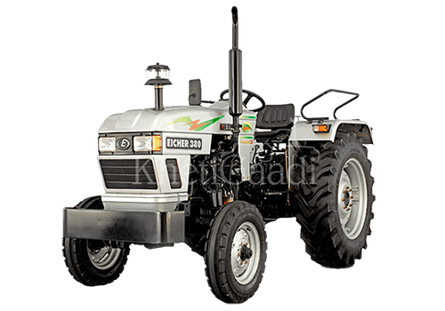

TAFE - Tractors and Farm Equipment Limited, is an Indian tractor major incorporated in 1960 at Chennai, India, with an annual turnover in excess of INR 12,500 crores. One of the largest tractor manufacturers in the world and the
second largest in India by volumes, TAFE sells over 200,000 tractors annually. TAFE's partnership with AGCO Corporation and the Massey Ferguson brand for over 63 years is a stellar example of its commitment to building long-
term relationships with its stakeholders, through fair and ethical business practices. TAFE is also a significant shareholder in the AGCO Corporation, USA - a US $11.1 billion tractor and agricultural equipment manufacturer.
Massey Ferguson - a world-renowned premium brand offering a wide variety of tractors and farm machinery is an icon in itself and has been reshaping the agricultural landscape of the world since over a century now. Recognized for its experience, innovation and superior build quality, this eminent global tractor brand offers one of the most comprehensive and versatile range of agricultural and utility tractors in the industry.
>

The EICHER brand of tractors are one of the oldest names in the industry, and with the all new and refreshing EICHER ‘E’ symbol, are a household name in India, and a respected mark of trust in various parts of the world. A reputed brand in the agricultural vista, EICHER tractors are renowned for their high value for money proposition, providing cost-effective and proficient products packed with some of the finest global technology. Synonymous with ruggedness and reliability, EICHER tractors are efficient, economical and offer an Ummeed Se Zyada, (translated means “it exceeds expectations”) experience. Blended with precision technology and the promise of TAFE, there is an EICHER tractor for everything and a tractor for all.
Labeled under our signature brand, the TAFE range of tractors is tough, durable and efficient. With an established presence in Africa, Sri Lanka, Bangladesh and parts of Europe, the robust utility tractors from TAFE are known for their dependability and relevantly optimized technology. The TAFE tractors have proven their mettle in working with vivid soil conditions and for a wide range of applications to cultivate various geographies around the world. Built to the taste of the land, a TAFE tractor is synonymous to toughness and stands for high standards of precision build quality, housing the expertise of TAFE acquired over decades of its being.